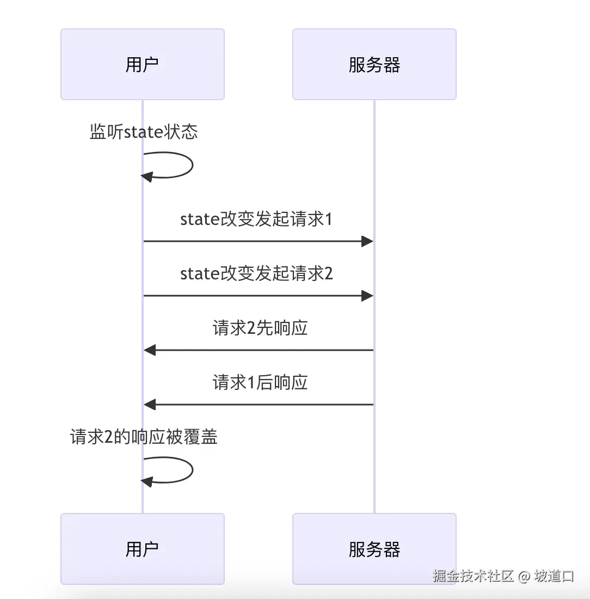

HaoTian · 2024-10-10 22:24:57
作为一名经常被各种复杂请求场景折磨的前端开发者，我深知处理动态数据请求的痛苦。但最近，我发现了一个强大的工具——alovajs 的 useWatcher。它极大地简化了我的工作，让我在处理动态数据请求时轻松了不少。让我和大家分享这个令人兴奋的发现吧！
alovajs 是一个新一代的请求工具，它的目标是简化请求流程。与 react-query 和 swrjs 等库不同，alovajs 提供了针对各种请求场景的完整解决方案。它的 hooks 不仅包括状态化数据，还包含特定的事件和 actions，让我们能用极少的代码实现特定场景下的请求。
alovajs 的"请求策略"是它的一大亮点，提供了 15+ 个这样的方案。这些策略覆盖了我们日常开发中遇到的各种复杂场景，大大提高了我们的开发效率。
想深入了解 alovajs 吗？快去官网 alova.js.org 看看吧！我相信你会和我一样，被它的功能所吸引。
现在，让我们聚焦到 useWatcher 上。这个功能真的解决了我很多问题，特别是在处理动态数据请求时。
use-watcher 允许我们监听指定状态的变化，并在变化时自动发送请求。这在处理分页、数据筛选、模糊搜索等场景中特别有用。看看这个例子：
const { loading, data } = useWatcher(
() => filterTodoList(userId.value),
[userId]
);
这段代码会监听 userId 的变化，一旦变化就自动请求新的 todo 列表。简单 yet 强大，不是吗？
有时我们需要一开始就发送请求，useWatcher 也考虑到了这点：
const { send } = useWatcher(() => getTodoList(currentPage), [currentPage], {
immediate: true,
});
设置 immediate: true，请求就会立即发送。这个功能在页面初始化时特别有用。
在处理模糊搜索时，请求防抖功能非常实用。useWatcher 内置了这个功能，使用起来也很简单：
const { loading, data, error } = useWatcher(
() => filterTodoList(keyword, date),
[keyword, date],
{
debounce: 500,
}
);
这样设置后，当 keyword 或 date 变化时，会等待 500ms 才发送请求。这有效避免了频繁请求导致的性能问题。
useWatcher 还能智能处理请求时序问题。通过设置 abortLast: true，它会自动中断上一次未响应的请求，确保我们总是获得最新的数据：
useWatcher(() => getTodoList($currentPage), [state], {
abortLast: true,
});
这个功能解决了我长期困扰的数据混乱问题。看看下面这张图，你就能理解它的工作原理了：
